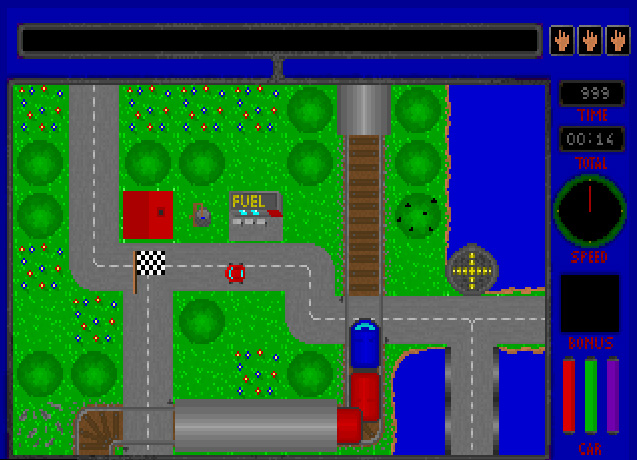

Official release coming very soon!
Carser is a top-down view single player retro racing game.


Controls
- Up - Accelerate
- Down - Break and Reverse
- Left/Right - Turn the car
- Space - Handbrake
- Enter - Confirm, use Hotel, start/stop the ferry boat
- Tab - Minimap
- Esc - Exit
- R - Restart level / reset high scores
- D - Destruct car
- F - Show/hide fps (22 is full speed)
- H - Honk
- P - Pause
News
- 29th January 2023 - Beta testing in progress and trailer video completed.
- 28th January 2023 - All 20 levels ready.
- 18th January 2023 - Game is feature complete. Fixing bugs and optimizing for speed.
- August 2022 - Development started again.
- September 1998 - Development stopped.
- October 1997 - Development starts.
History
In October 1997, 15 year old me started working on a game inspired by Micro Machines.
I had a lot of fun and kept adding features one after the other with only a vague idea where this might lead and what the game is all about.
In March 1998 I sent a demo to a gaming magazine and was proud to see my project in print.
Originally I wanted to make this game multi-player, playable via a local serial cable connecting two PCs. (This is where 'ser' in the name came from.) Very few people I knew had Internet at the time and if they did it was a very expensive dial-up. Multi-player turned out to be technically too challenging and a lot less fun than working on other parts. Scrapping multiplayer mode I added checkpoints and turned the main goal into a time challenge.
Eventually I hit some major roadblocks. The code and game art exhausted the 640k memory that MS-DOS real mode provided so I could not add more features. Making sound work turned out to be quite difficult too. I had been working on this game for almost a year and burned out. My game looked more and more out of date compared to trending 3D games like GTA 1 (1997). By 1998 Windows took over MS-DOS in terms of game releases and it was clear that the DOS era was over and by the end of the year games like Unreal 1 (1998) or Starcraft (1998) came out. I wished I started my project a few years earlier... So while the game was about 70% completed I stopped and a long hibernation had started...
Fast forward 25 years. We have witnessed a huge boom in indie and retro games, pixel art is popular again and DosBox can emulate MS-DOS cross-platform on low-end hardware and even in a browser. So I dug out the source code and started working again. This time I got help too, my 8 and 5 year old sons tested the levels and contributed a lot of sound effects. Finally, I finished the game with a little delay (as all good software projects should) and released it in 2023. I hope you'll enjoy it and that it was well worth the wait :)
I had a lot of fun and kept adding features one after the other with only a vague idea where this might lead and what the game is all about.
In March 1998 I sent a demo to a gaming magazine and was proud to see my project in print.
Originally I wanted to make this game multi-player, playable via a local serial cable connecting two PCs. (This is where 'ser' in the name came from.) Very few people I knew had Internet at the time and if they did it was a very expensive dial-up. Multi-player turned out to be technically too challenging and a lot less fun than working on other parts. Scrapping multiplayer mode I added checkpoints and turned the main goal into a time challenge.
Eventually I hit some major roadblocks. The code and game art exhausted the 640k memory that MS-DOS real mode provided so I could not add more features. Making sound work turned out to be quite difficult too. I had been working on this game for almost a year and burned out. My game looked more and more out of date compared to trending 3D games like GTA 1 (1997). By 1998 Windows took over MS-DOS in terms of game releases and it was clear that the DOS era was over and by the end of the year games like Unreal 1 (1998) or Starcraft (1998) came out. I wished I started my project a few years earlier... So while the game was about 70% completed I stopped and a long hibernation had started...
Fast forward 25 years. We have witnessed a huge boom in indie and retro games, pixel art is popular again and DosBox can emulate MS-DOS cross-platform on low-end hardware and even in a browser. So I dug out the source code and started working again. This time I got help too, my 8 and 5 year old sons tested the levels and contributed a lot of sound effects. Finally, I finished the game with a little delay (as all good software projects should) and released it in 2023. I hope you'll enjoy it and that it was well worth the wait :)